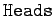
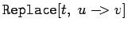

Viele Grundoperatoren dürfen in der vereinfachten Schreibweise mit der in der Mathematik üblichen Infix-Form benutzt werden. Jedoch ist in jedem Fall diese nur ein vereinfachendes Synonym für die vollständige Schreibweise als Ausdruck. Eine Reihe häufig vorkommender Operatoren und ihre vollständige Form enthält die folgende Tabelle.
Die meisten Bezeichnungen in der Tabelle sind selbsterklärend. Bei der Multiplikation in der Form  ist unbedingt auf das Leerzeichen zwischen den Faktoren zu achten.
ist unbedingt auf das Leerzeichen zwischen den Faktoren zu achten.
Es sei auf die Ausdrücke mit den  und hingewiesen. weist dem Ausdruck r auf der linken Seite, z.B. einer Variablen, den Wert des Ausdrucks s auf der rechten Seite, z.B. eine Zahl, zu. Von hier an wird r bis zum Zeitpunkt der Aufhebung dieser Zuordnung durch den zugewiesenen Wert dargestellt. Die Aufhebung erfolgt entweder durch die Zuweisung eines neuen Wertes oder durch x=. bzw. , d.h. durch Löschen aller bisherigen Zuweisungen. Die Konstruktion dagegen ist als Transformationsregel aufzufassen. Sie tritt oft im Zusammenhang mit dem Ersetzungsoperator /. auf.
 oder bedeutet, daß alle im Ausdruck t enthaltenen Elemente u durch den Ausdruck v zu ersetzen sind.
| Beispiel |
|
|
Daneben gibt es zwei weitere Operatoren, die verzögert wirken.
| (20.10a) |
und
 |
(20.10b) |
Auch hier gilt bis zur Aufhebung der Zuweisung bzw. der Transformationsregel, daß für die linke Seite immer die rechte eingesetzt wird, jedoch erfolgt die Auswertung der rechten Seite erst zum Zeitpunkt des Aufrufes der linken.
Der Ausdruck u==v oder bedeutet, daß u und v identisch sind. wird z.B. benutzt, um Gleichungen zu manipulieren.